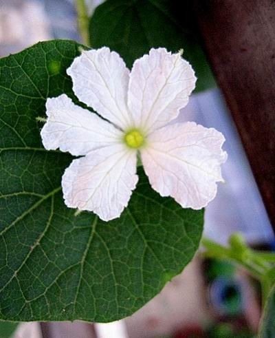
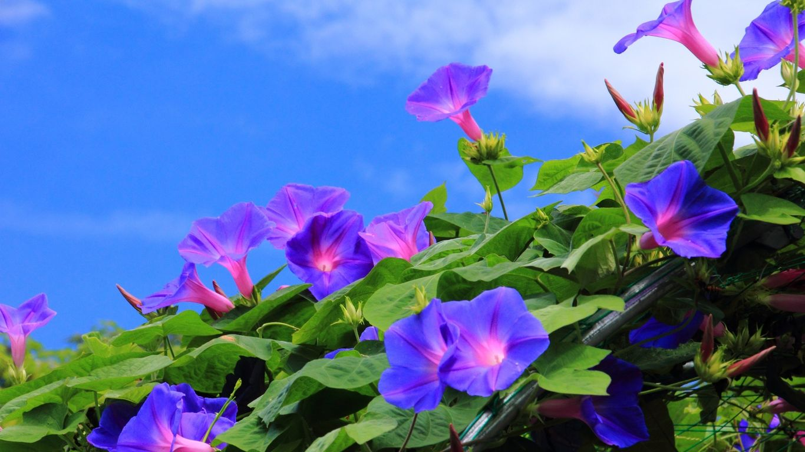
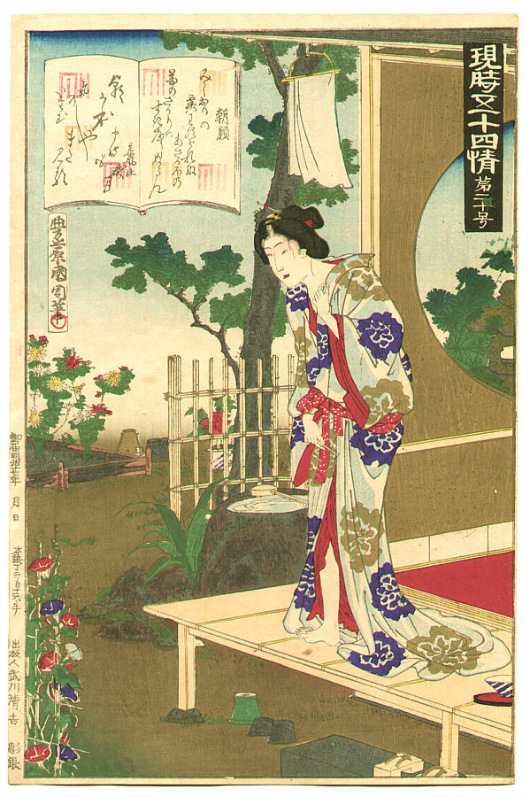
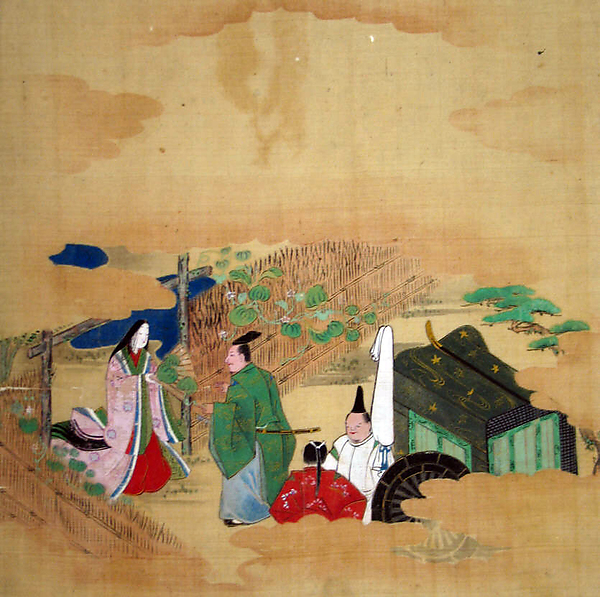
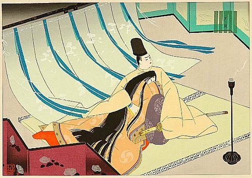

Background:
Asagao:
One of Genji’s cousins, daughter of Emperor Kiritsubo’s brother, Prince Shikibu. Asagao is often translated as morning glory. However, Washburn translates it as bellflower since the chapter Asagao takes place in autumn. In order to compare it with yugao, we will take it as morning glory.
Yugao:
A lady of lower rank. Both of her parents died young. She use to be To no Chujo’s lover and they have a daughter called Tamakazura.
How did they get their names
Yugao:
Genji went to visit his old nurse and was attracted by the white flowers called yugao blooming at a house nearby. Genji sent his man to pick up the flower. That was the beginning of the encounter of Genji and Yugao.
Asagao:
Asagao appeared for the first time in Chapter 2 Hahakigi. Genji heard women cited his poem that was sent to Asagao, “along with cuttings of the bellflowers that were her namesake”(43).
 
Two women and their related flowers:
Asagao:
The morning glory blooms in the morning, the best time of a day. Its shining appearance can be seen by everyone in the daylight. This corresponds to Prince Asago’s high status and her gorgeous looking.Genji tried to seduce Asagao several times but failed. Hating to be considered shallow and small, Asagao keeps distance from Genji which makes Genji feel frustrated. Asagao tends to treat everything carefully in order to protect herself from rumors. Her strong will makes her the flower that would not be easily picked by man and this kind of flower usually stays longer.

Asagao by Toyohara Kunichika
Yugao:
Different from the morning glory, Yugao usually bloom in the evening and last through the night. In chapter Yugao, the flowers grow on the fence of a humble house which reveals the mistress’s low status. Genji said that “What a sad fate for a flower.”(63) when he saw Yugao for the first time. The same sad fate is pre-destined for the lady of Yugao. Although Yugao seemed to be carefree, just like the flowers “looking extremely self-satisfied”, she actually “pretended all was well and never le anyone see her unhappy no matter how mush she suffered”(88). Hiding in the small house, Yugao was worrying about being threatened again by To no Chujo’s wife and then she met Genji. After the transient happiness she was frightened to death by the living ghost. As a human flower, being picked by these two men might be the catastrophe of her life.

Yugao by Tosa School

Yugaoo by Masao Ebina